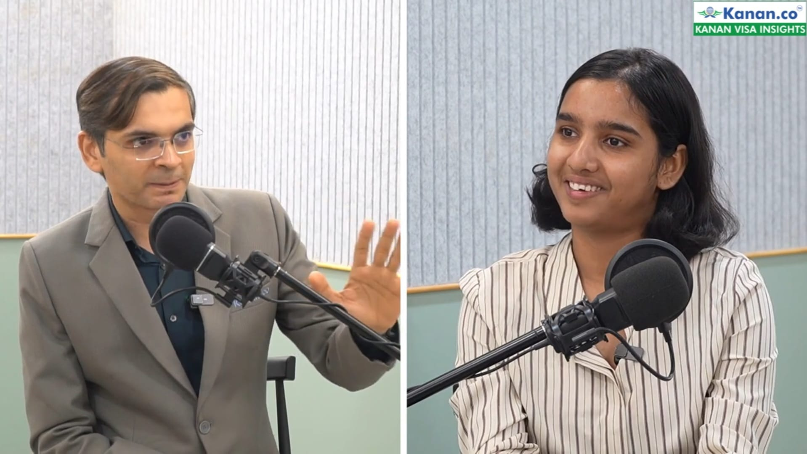
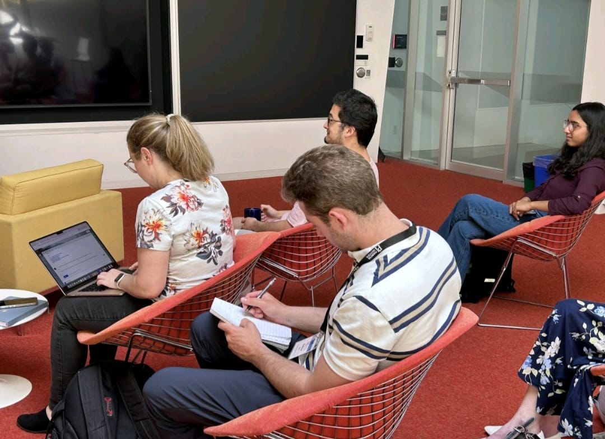
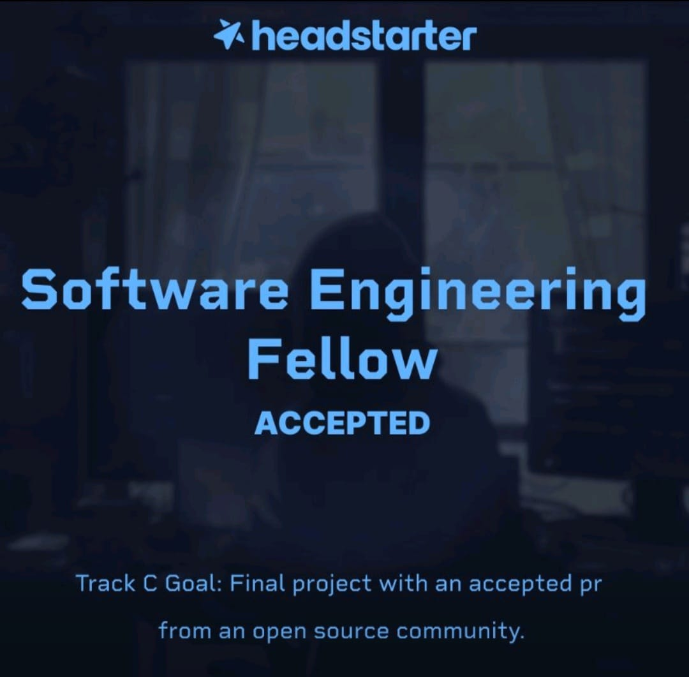
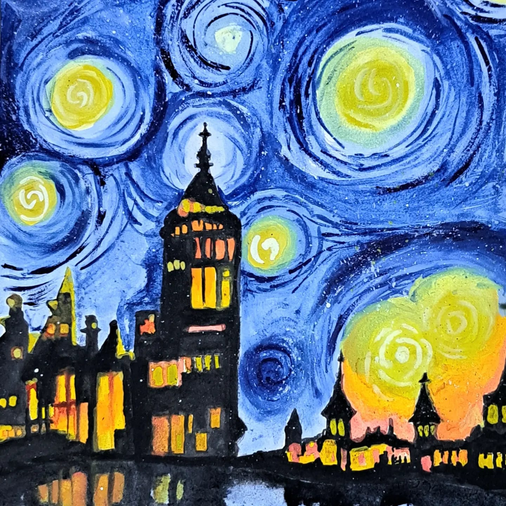

DONA BAROT
Computer Science Student
ABOUT ME
As a sophomore year computer science student at Conestoga College, Waterloo, I'm currently exploring a universe of interests while anchoring myself in the world of technology. Navigating the vast landscape of coding, I'm constantly learning and adapting, occasionally caught in complex bugs and challenging algorithms. My curiosity extends beyond the code: I'm delving into quantum computing, experimenting with art mostly, painting, and immersing myself in space science literature. Chess is a strategic outlet that sharpens my problem-solving skills. Despite my diverse interests, my primary focus remains on pushing the boundaries of technology and software development. Whether it is developing innovative AI applications or solving intricate coding challenges, my journey is driven by a passion for creating impactful solutions and a fascination with the scientific wonders of the universe.
SKILLS
Technical Skills
Python
C
C++
Frontend
Qiskit
Soft Skills
- Problem-Solving: Adept at tackling complex challenges with innovative solutions.
- Communication: Effective in articulating ideas and collaborating with diverse teams.
- Team Collaboration: Experienced in working within team environments to achieve collective goals.
- Adaptability: Quick to adjust to new challenges and rapidly changing environments.
- Creativity: Infusing imaginative approaches into problem-solving and project development.
PROJECTS
This website marks my first step into the world of project creation, crafted with curiosity and enthusiasm. As I continue to grow and learn, I'll be adding more projects here. It's a work in progress, much like the universe itself—always expanding and full of possibilities. Stay tuned for new updates and creative endeavors. Check out my extras to see what I've been doing so far.
EXTRAS
Podcast on the Ground Reality of Canada
I recently participated in a podcast hosted by Kanan.co, discussing the ground realities of life in Canada as an international student.
Listen to the podcastQuantum Computing Enthusiast
I'm a quantum computing enthusiast, having participated in an event hosted by the Perimeter Institute. Currently, I'm delving deeper into this fascinating field.
Headstarter Fellow
I've been selected as a Headstarter Fellow, where I'll be working on various projects, participating in mock interviews, and building valuable connections.
Art & Instagram
I also enjoy creating art. You can check out my work on my Instagram page: @drawsdona.
CONTACT ME
Or reach me directly:
Email:
barotdona4@gmail.comLinkedIn:
My LinkedIn Profile